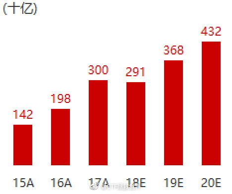

2007-2017年通胀是多少？如果你不考虑房价，凭你的真实感受，你觉得通胀是多少？你的衣食行，比十年前多了多少？注意：请排除你消费升级的因素。你不能十年前坐绿皮车，十年后坐商务舱告诉我出行成本增加了。
回复@不停奔跑的笨狼:也不能只看总利润。EPS涨幅没有这么大，有增发摊薄因素。但是一定是越来越多，这也是指数基金一定越涨越高的根本基础//@不停奔跑的笨狼:2020年是2015年的3倍，那么问题来了，指数会到多少，不敢想象啊@ETF拯救世界:中证500盈利预测。2018年会比2017年小幅下降（3%），但2019和2020会恢复高增长。“越跌越贵”在2018年底看起来没错，但站的太低，看的太近。 
回复@雲中漫步_1117:脱欧的事情搞定之前估计很难上。基金公司应该还是有自己的顾虑//@雲中漫步_1117:华宝好像报了一只，希望早点批下来//@ETF拯救世界:十二年前英镑兑人民币是15。现在是8。目前富时100估值是15。非常遗憾，国内富时100产品依然没有上。---:抱歉，作者已设置仅展示半年内微博，此微博已不可见。